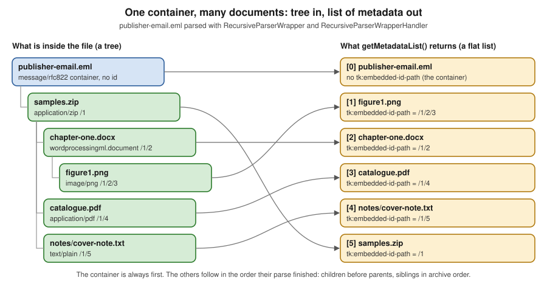

Embedded Documents & Recursive Parsing
|
This content was generated with the assistance of AI and should be verified against the official documentation before being relied on in production. |
Baseline date: 2026-10-12. This page was written against Apache Tika 4.1.0 (the latest release on Maven Central on that
date) with the 3.3.x differences noted, Java 21 and later for the examples (Tika 4.x needs Java 17), Spring Boot 4.x on
Spring Framework 7 and the Docker image apache/tika:4.1.0. Most files that arrive at a real intake desk are not one
document but a bundle: an e-mail with a ZIP attached, a ZIP holding a Word file that holds a picture, a PDF with a
spreadsheet attached. Tika calls everything inside a container an embedded document, and parsing them is the difference
between extracting the three lines of text in an e-mail body and extracting the manuscript, the catalogue and the cover
note that the e-mail carried. This page explains what counts as embedded, what the default parse does with it, the
list of metadata model of RecursiveParserWrapper (the model behind /rmeta and tika-app -J), the metadata keys
that describe containment, the 4.x stateless EmbeddedDocumentExtractor, how to get the embedded bytes back out, how to
bound the recursion, and how failures inside an attachment are reported. The facade that hides all of this is in
Getting Started with the Tika Facade; the parser
contract that the extractor plugs into is in Parser API &
AutoDetectParser; the other content handlers are in
Content Handlers & Output Formats; the key namespaces
are in Metadata; and the architecture around all of it is in
Introduction & Architecture.
All Java examples on this page were compiled and run against Tika 4.1.0 (tika-core, tika-parsers-standard-package as a
pom dependency, tika-serialization for JsonMetadataList and TikaLoader). The tika-app commands were run from the
4.1.0 classpath, not from the zip distribution. Everything that was not run is labelled as such: the tika-server
endpoints /rmeta and /unpack (no server was started), and the unpack-config JSON file (only its CLI flag
counterparts were run).
The Bookshelf scenario: publisher-email.eml
The Bookshelf intake service receives publisher-email.eml, a message from a publisher with one attachment,
samples.zip. Inside the archive are three files: a chapter, chapter-one.docx, which itself contains the picture
figure1.png; the catalogue catalogue.pdf; and a text note stored as notes/cover-note.txt in windows-1252. The
sample files used here are small stand-ins that were generated for this page (the .eml is 4 KB, the ZIP 2,975 bytes).
publisher-email.eml message/rfc822, the container
└── samples.zip the attachment
├── chapter-one.docx Word document
│ └── figure1.png picture inside the .docx
├── catalogue.pdf
└── notes/cover-note.txt windows-1252 textThe same tree as a diagram, with the identifier that Tika’s recursive parser assigns to each embedded document (the container has none):
message/rfc822
root, no embedded id"] Z["samples.zip
application/zip
tk:embedded-id-path = /1
ATTACHMENT"] D["chapter-one.docx
OOXML Word
/1/2"] P["catalogue.pdf
application/pdf
/1/4"] T["notes/cover-note.txt
text/plain, windows-1252
/1/5"] F["figure1.png
image/png
/1/2/3
INLINE"] E -->|RFC822Parser| Z Z -->|ZipParser| D Z -->|ZipParser| P Z -->|ZipParser| T D -->|OOXMLParser| F
The numbers are the order in which Tika met the documents (depth first), not a property of the files; they change when a limit or a selector skips something, as shown in Embedded limits.
What counts as embedded
Tika treats a document as embedded when a parser finds another complete file inside the one it is parsing and hands that inner file back to Tika for its own detection and parse. The container parser decides what is worth handing back, so the list below describes what the standard parsers do in 4.1.x, not a guarantee of the format.
| Container | Embedded documents |
|---|---|
ZIP, TAR, 7z, gzip and other archives |
Every entry (a gzip has one). The entry path becomes the resource name. |
E-mail ( |
The attachments, with the parts' file names where the message gives them. |
Word, Excel and PowerPoint (OOXML and OLE2) |
Pictures, embedded OLE objects (a spreadsheet pasted into a document) and attached files. |
File attachments and, when enabled, inline images; the |
|
OpenDocument, iWork, EPUB |
Pictures and other package parts, depending on the parser. |
The category of an embedded document is recorded in tk:embedded-resource-type when the parser knows it. In the
Bookshelf tree above the ZIP carries ATTACHMENT (it was attached to an e-mail) and the picture carries INLINE (it
is shown in the page). The values are the constants of the TikaCoreProperties.EmbeddedResourceType enum in 4.1.0:
INLINE, ATTACHMENT, MACRO, METADATA, FONT, THUMBNAIL, RENDERING, VERSION and
ALTERNATE_FORMAT_CHUNK. Not every parser sets it: in the run on this page the DOCX, PDF and text entries of the ZIP
have no tk:embedded-resource-type at all, because the ZIP parser does not classify its entries.
What the default parse does with embedded documents
If you parse with AutoDetectParser and a BodyContentHandler, embedded documents are parsed, but the result is one
merged stream. Their text is appended to the container’s text in document order, their metadata is not returned per
document, and there is no way to tell which words came from which file.
import java.nio.file.Path;
import org.apache.tika.io.TikaInputStream;
import org.apache.tika.metadata.Metadata;
import org.apache.tika.parser.AutoDetectParser;
import org.apache.tika.parser.ParseContext;
import org.apache.tika.sax.BodyContentHandler;
public class FlatVersusList {
public static void main(String[] args) throws Exception {
AutoDetectParser parser = new AutoDetectParser();
BodyContentHandler handler = new BodyContentHandler(-1);
Metadata metadata = new Metadata();
try (TikaInputStream tis = TikaInputStream.get(Path.of(args[0]))) {
parser.parse(tis, handler, metadata, new ParseContext());
}
System.out.println(handler);
}
}Output for publisher-email.eml (blank lines collapsed, so the line breaks are approximate):
Hello,
Please find the spring samples in the attached archive.
Marta
chapter-one.docx
Chapter one
The lamp was lit at dusk.
figure1.png
catalogue.pdf
Bookshelf spring catalogue
Forty titles from independent publishers.
notes/cover-note.txt
Cover note for the Bookshelf intake team.
Two samples attached: a chapter with one figure and the spring catalogue.This is good enough for a search index that only needs words, and it is what the Tika facade returns. It is not good
enough for the intake service, which wants to file the catalogue under Catalogues, the manuscript under Submissions
and the note under Correspondence, and which wants the author of the DOCX and the producer of the PDF, not the
sender of the e-mail. The file names that appear in the output above (chapter-one.docx, catalogue.pdf) are written
into the text by ParsingEmbeddedDocumentExtractor, which emits the resource name as a heading before each embedded
document unless SAXOutputConfig.isWriteFileNameToContent() says otherwise. For per-document text and metadata you use
the recursive parser.
Two behaviours of the default parse are worth knowing before you rely on it:
-
AutoDetectParser.parseputs itself into theParseContextas theParserthat embedded documents are delegated to, unless you already set one, and does the same for theDetector. In 4.1.0 this is done by a private method that documents why: the stock extractors readParser.classfrom the context, so a missing entry would silently drop embedded content. The book’s recipe,context.set(Parser.class, parser), is therefore needed only when you use a parser that is not anAutoDetectParser, such as a bareCompositeParser. -
Embedded recursion is on by default and is not bounded unless you configure
EmbeddedLimits(see Embedded limits). The defaultmaxDepthandmaxCountare-1, unlimited.
RecursiveParserWrapper and the list of metadata
RecursiveParserWrapper (package org.apache.tika.parser) decorates another parser. It parses the container with that
parser and intercepts every embedded document on the way: it gives each one its own Metadata object and its own
content handler, and reports the result to a RecursiveParserWrapperHandler. The handler’s getMetadataList() returns
the list of metadata: one Metadata per document, the container first, with the extracted text stored in each object
under tk:content.
import java.io.IOException;
import java.io.StringWriter;
import java.nio.file.Path;
import java.util.List;
import org.apache.tika.exception.TikaException;
import org.apache.tika.io.TikaInputStream;
import org.apache.tika.metadata.Metadata;
import org.apache.tika.metadata.TikaCoreProperties;
import org.apache.tika.parser.AutoDetectParser;
import org.apache.tika.parser.ParseContext;
import org.apache.tika.parser.RecursiveParserWrapper;
import org.apache.tika.sax.BasicContentHandlerFactory;
import org.apache.tika.sax.RecursiveParserWrapperHandler;
import org.apache.tika.serialization.JsonMetadataList;
import org.xml.sax.SAXException;
public class IntakeTree {
public static void main(String[] args) throws IOException, SAXException, TikaException {
RecursiveParserWrapper wrapper = new RecursiveParserWrapper(new AutoDetectParser());
RecursiveParserWrapperHandler handler = new RecursiveParserWrapperHandler(
new BasicContentHandlerFactory(BasicContentHandlerFactory.HANDLER_TYPE.TEXT, -1));
try (TikaInputStream tis = TikaInputStream.get(Path.of(args[0]))) {
wrapper.parse(tis, handler, new Metadata(), new ParseContext());
}
List<Metadata> list = handler.getMetadataList();
System.out.println(list.size() + " metadata objects");
for (Metadata m : list) {
System.out.printf("%-6s %-10s %-24s %-44s %s%n",
m.get(TikaCoreProperties.EMBEDDED_ID),
m.get(TikaCoreProperties.EMBEDDED_ID_PATH),
m.get(TikaCoreProperties.RESOURCE_NAME_KEY),
m.get(TikaCoreProperties.EMBEDDED_RESOURCE_PATH),
m.get("Content-Type"));
}
StringWriter json = new StringWriter();
JsonMetadataList.toJson(list, json, true); // the same JSON that /rmeta and -J return
System.out.println(json);
}
}Source: RecursiveParserWrapper, Javadoc 4.1.0,
RecursiveParserWrapperHandler, Javadoc 4.1.0,
RecursiveParserWrapper, Tika wiki (written
for 2.x and 3.x) and the tika-example ParsingExample class.
Output (the first line of the first row has null for the identifier because the container has none):
6 metadata objects
null null Spring submissions: samples attached.eml null message/rfc822
3 /1/2/3 figure1.png /samples.zip/chapter-one.docx/figure1.png image/png
2 /1/2 chapter-one.docx /samples.zip/chapter-one.docx application/vnd.openxmlformats-officedocument.wordprocessingml.document
4 /1/4 catalogue.pdf /samples.zip/catalogue.pdf application/pdf
5 /1/5 notes/cover-note.txt /samples.zip/cover-note.txt text/plain; charset=windows-1252
1 /1 samples.zip /samples.zip application/zipThe figure shows the same result as a picture: the tree on the left, the list that getMetadataList() returns on the
right.

Read the table carefully, because it shows the three properties of the model that surprise people.
-
The container is first, then the embedded documents in the order their parse finished.
RecursiveParserWrapperHandlerappends each embedded document’s metadata whenendEmbeddedDocumentfires, which is after all of that document’s children, and inserts the container at index 0 inendDocument. Sofigure1.png(/1/2/3) comes before thechapter-one.docx(/1/2) that contains it, andsamples.zip(/1) comes last. This is a post-order traversal. Never treat the list as a pre-order tree dump; rebuild the tree fromtk:embedded-id-path. -
Every object has its own text. The
tk:contentvalue of the DOCX is only the Word text; the ZIP’s is only the list of entry names. That is what makes it possible to classify and index the documents separately. -
The container’s own metadata is not polluted by the attachments. In the real output above, the e-mail’s object has
message:from,dc:subjectanddcterms:createdof the message, andtk:parsed-by-full-setlists every parser that touched any document in the tree (RFC822Parser,ZipParser,OOXMLParser,ImageParser,PDFParser,TextAndCSVParser), whiletk:parsed-bylists only the parsers of the container itself.
An abridged version of the JSON (the real list has six objects and the picture and PDF entries have dozens of keys of their own, so only the keys that describe containment are shown):
[ {
"Content-Type" : "message/rfc822",
"dc:title" : "Spring submissions: samples attached",
"tk:embedded-depth" : "0",
"tk:parsed-by" : [ "org.apache.tika.parser.DefaultParser", "org.apache.tika.parser.mail.RFC822Parser" ],
"tk:parsed-by-full-set" : [ "...DefaultParser", "...RFC822Parser", "...ZipParser", "...OOXMLParser",
"...ImageParser", "...PDFParser", "...TextAndCSVParser" ],
"tk:resource-name" : "Spring submissions: samples attached.eml",
"tk:content" : "Spring submissions: samples attached\n\nHello,\n\nPlease find ..."
}, {
"Content-Type" : "image/png",
"tk:embedded-depth" : "3",
"tk:embedded-id" : "3",
"tk:embedded-id-path" : "/1/2/3",
"tk:embedded-relationship-id" : "rId10",
"tk:embedded-resource-path" : "/samples.zip/chapter-one.docx/figure1.png",
"tk:embedded-resource-type" : "INLINE",
"tk:final-embedded-resource-path" : "/samples.zip/chapter-one.docx/figure1.png",
"tk:internal-path" : "/word/media/figure1.png",
"tk:resource-name" : "figure1.png"
}, {
"Content-Type" : "application/zip",
"Content-Disposition" : "attachment; filename=\"samples.zip\"",
"tk:embedded-depth" : "1",
"tk:embedded-id" : "1",
"tk:embedded-id-path" : "/1",
"tk:embedded-resource-path" : "/samples.zip",
"tk:embedded-resource-type" : "ATTACHMENT",
"tk:resource-name" : "samples.zip",
"tk:content" : "chapter-one.docx\n\ncatalogue.pdf\n\nnotes/cover-note.txt\n"
} ]Source: tika-app, 4.1.x docs (-J prints this JSON) and
JsonMetadataList, Javadoc 4.1.0.
Constructor, handler type and memory
new RecursiveParserWrapper(parser) catches and records exceptions thrown by embedded documents so one bad attachment
does not lose the others. new RecursiveParserWrapper(parser, false) rethrows them instead, which stops the parse
(see Failures inside embedded documents).
The text handler is chosen by the ContentHandlerFactory you give the handler. BasicContentHandlerFactory offers the
handler types TEXT, HTML, XML, BODY, MARKDOWN and IGNORE, and a write limit, covered in
Content Handlers & Output Formats. The 4.x default
for tika-app and tika-server is Markdown; the factory you build in code is whatever you pass, as above. IGNORE
(metadata only) is the cheap option for a classification pass that does not need the text.
The default RecursiveParserWrapperHandler keeps every document’s metadata and content in memory until you drop the
list, because it stores the text in tk:content. A 4,000-entry mailbox export therefore holds all 4,000 documents'
text at once. Two ways to bound that are a write limit on the factory and a streaming handler.
The write limit is shared. Reading RecursiveParserWrapper in 4.1.0, the counter that enforces writeLimit is created
once per top-level parse and passed to every embedded document’s handler, so the limit is a budget for the whole
container, not per attachment. A large first attachment can therefore starve the rest. This was read from the source,
not measured.
A streaming handler
When you do not want a list at all, subclass AbstractRecursiveParserWrapperHandler, the base class of the default
handler, and act on each document as soon as it ends. The base class tracks the nesting depth in
tk:embedded-depth, so the overrides must call super.
import java.io.IOException;
import java.nio.file.Path;
import org.apache.tika.exception.TikaException;
import org.apache.tika.io.TikaInputStream;
import org.apache.tika.metadata.Metadata;
import org.apache.tika.metadata.TikaCoreProperties;
import org.apache.tika.parser.AutoDetectParser;
import org.apache.tika.parser.ParseContext;
import org.apache.tika.parser.RecursiveParserWrapper;
import org.apache.tika.sax.AbstractRecursiveParserWrapperHandler;
import org.apache.tika.sax.BasicContentHandlerFactory;
import org.xml.sax.ContentHandler;
import org.xml.sax.SAXException;
/** Handles each document as soon as it ends; nothing is kept in a list. */
public class StreamingHandler extends AbstractRecursiveParserWrapperHandler {
public StreamingHandler() {
super(new BasicContentHandlerFactory(BasicContentHandlerFactory.HANDLER_TYPE.TEXT, 100_000));
}
@Override
public void endEmbeddedDocument(ContentHandler contentHandler, Metadata metadata)
throws SAXException {
super.endEmbeddedDocument(contentHandler, metadata); // keeps the depth counter right
report(contentHandler, metadata);
}
@Override
public void endDocument(ContentHandler contentHandler, Metadata metadata) throws SAXException {
super.endDocument(contentHandler, metadata);
report(contentHandler, metadata);
}
private void report(ContentHandler contentHandler, Metadata metadata) {
String text = contentHandler.toString();
String idPath = metadata.get(TikaCoreProperties.EMBEDDED_ID_PATH);
System.out.printf("%-10s depth=%s chars=%d%n", idPath == null ? "(root)" : idPath,
metadata.get(TikaCoreProperties.EMBEDDED_DEPTH), text.length());
// index or store the document here, then let it be garbage collected
}
public static void main(String[] args) throws IOException, SAXException, TikaException {
RecursiveParserWrapper wrapper = new RecursiveParserWrapper(new AutoDetectParser());
try (TikaInputStream tis = TikaInputStream.get(Path.of(args[0]))) {
wrapper.parse(tis, new StreamingHandler(), new Metadata(), new ParseContext());
}
}
}Output:
/1/2/3 depth=3 chars=36
/1/2 depth=2 chars=105
/1/4 depth=2 chars=136
/1/5 depth=2 chars=144
/1 depth=1 chars=77
(root) depth=0 chars=134Here the root is reported last because endDocument fires when the whole parse is over; the default handler reorders it
to the front, a streaming handler does not. Create one handler per parse; handlers keep per-parse state (the depth
counter, the list), and the source of RecursiveParserWrapper itself says its per-call state is a step towards making
the wrapper thread safe in a future version, so treat wrapper and handler as one unit per parse. The wrapper is cheap
to create.
Containment metadata
Tika writes a small family of keys to describe where each embedded document sits and what the container called it. The 4.1.x docs split them into two groups that are easy to confuse.
Containment structure (written by Tika). These answer "which document contained this one?".
TikaCoreProperties constant |
4.x key | 3.x key | Meaning |
|---|---|---|---|
|
|
|
A 1-based counter assigned in the order the wrapper meets documents. Not set on the root. |
|
|
|
The chain of ids from the root, such as |
|
|
|
A synthetic, human-readable path built from the resource names at each level, such as |
|
|
|
The same, computed at the end of the parse by |
|
|
|
0 for the root, 1 for its attachments, and so on. Set by the handler base class. |
|
|
|
The name a parser recorded. For archive entries this is the whole entry path, |
|
|
|
|
Container metadata (what the file itself says). These answer "where did the container store this?".
TikaCoreProperties constant |
4.x key | 3.x key | Meaning |
|---|---|---|---|
|
|
|
The path as literally stored inside the immediate container: the ZIP entry ( |
|
|
|
For some formats, the path where a document was last saved on its author’s machine, or the original name an attachment recorded. |
|
|
|
The relationship id in an Office Open XML package, such as |
The 3.x spellings of the keys in both tables were read from the tika-core-3.3.0 sources (X-TIKA: prefix, snake_case
or camelCase words) and the 4.x spellings from the 4.1.0 sources, where TIKA_META_PREFIX is tk: and words are separated by hyphens.
The complete 3.x to 4.x key mapping is the subject of Metadata.
Reading the paths from the walkthrough
In the real output above:
| Document | tk:embedded-id-path |
tk:resource-name |
tk:internal-path |
tk:embedded-resource-path |
|---|---|---|---|---|
|
not set |
|
not set |
not set |
|
|
|
not set |
|
|
|
|
|
|
|
|
|
|
|
|
|
|
|
|
|
|
|
|
|
Notice three things. The root has no tk:internal-path because nothing contains it, and its tk:resource-name is a
display name the e-mail parser built from the subject, not a file name on disk. The text note has the entry path in
tk:resource-name, with the folder notes/, but tk:embedded-resource-path drops the folder: Tika keeps one path
component per nesting level. And the picture’s tk:internal-path is the OOXML part name, which no longer mentions
samples.zip: each container only knows its own layout.
|
Never build a file-system path from |
Metadata written by embedded-document parsing
A few more keys appear on documents in the list and are useful when you triage a corpus:
| Key | Meaning |
|---|---|
|
Wall-clock time this document’s parse took. In the run, the ZIP took 365 ms, the DOCX 187 ms and the text note 3 ms; the ZIP’s time includes its children. |
|
The parser chain for this document. The embedded documents above show |
|
The handler type that produced |
|
A stack trace or summary for a failed embedded document, on that document’s own object. See Failures inside embedded documents. |
|
Set to |
|
Set when the write limit truncated the text. |
The stateless EmbeddedDocumentExtractor
When a container parser (the ZIP parser, the PDF parser, the OOXML parser) finds an embedded document it does not parse
it itself. It asks the ParseContext for an EmbeddedDocumentExtractor and calls it twice: shouldParseEmbedded to
ask whether to bother, and parseEmbedded to do the work. The default implementation,
ParsingEmbeddedDocumentExtractor, delegates to the Parser that is in the context (that is what lets
RecursiveParserWrapper interpose its own decorator).
public interface EmbeddedDocumentExtractor {
boolean shouldParseEmbedded(Metadata metadata, ParseContext parseContext);
void parseEmbedded(TikaInputStream stream, ContentHandler handler, Metadata metadata,
ParseContext parseContext, boolean outputHtml) throws SAXException, IOException;
}In Tika 4.x this interface is stateless. Every method receives the ParseContext of the enclosing parse, one shared
instance (ParsingEmbeddedDocumentExtractor.INSTANCE) serves every parse on every thread, and the interface’s Javadoc
tells implementors not to cache per-parse state on this. In 3.x the extractor was created per parse by an
EmbeddedDocumentExtractorFactory that received the metadata and context, so implementations kept the per-parse state
(a counter, an output directory) in fields.
| Aspect | 3.x (3.3.0 sources) | 4.x (4.1.0 sources) |
|---|---|---|
|
|
|
|
|
|
Lifecycle |
|
No factory class in the 4.1.0 |
Per-parse state |
Fields on the extractor |
A holder object in the |
Limits |
|
|
What the default extractor checks
ParsingEmbeddedDocumentExtractor.shouldParseEmbedded and parseEmbedded apply, in this order, using the ParseRecord
and other objects that the parse put in the context:
(timeout-limits)"} B -->|yes| X["Skip it. Throw EmbeddedLimitReachedException
only if throwOnDeadline"] B -->|no| C{"embedded count >= maxCount?"} C -->|yes| X2["Skip it and every later one
tk:exception:embedded-resource-limit-reached"] C -->|no| D{"depth + 1 > maxDepth?"} D -->|yes| X3["Skip it, siblings still parse
tk:exception:embedded-depth-limit-reached"] D -->|no| E{"DocumentSelector in context
and select(metadata) false?"} E -->|yes| X4["Skip it"] E -->|no| F{"FilenameFilter in context
and name rejected?"} F -->|yes| X5["Skip it"] F -->|no| G["Parse with the Parser in the context
output a div class package-entry if outputHtml"]
The selection hooks are therefore ordinary context entries:
-
DocumentSelector(org.apache.tika.extractor) is a one-method interface,boolean select(Metadata metadata). It sees the metadata the container parser has gathered so far, usually the resource name and, sometimes, the media type. It is the right place to skip images or executables, and it is what the example below uses. -
java.io.FilenameFilteris consulted when noDocumentSelectoris present; Tika calls it with an emptyFileand the resource name. -
The 4.1.0 source comment says subclasses that override
parseEmbeddedshould callcheckEmbeddedLimits, so a custom extractor does not accidentally disable limits.
When the embedded parse itself fails, parseEmbedded records the exception in the ParseRecord, which the wrapper
copies to the document’s metadata, and moves on. CorruptedFileException is the exception to that rule: it is wrapped
in an IOException and stops the whole parse, "to avoid infinite loops on corrupt sqlite3 files", as a source comment
puts it.
Skipping documents: DocumentSelector and limits in action
The program below parses publisher-email.eml five times: with no limit, with maxDepth=2, with maxCount=3, with a
DocumentSelector that refuses images, and with a throwing count limit. It prints the id path and the final resource
path of each object.
import java.io.IOException;
import java.nio.file.Path;
import java.util.List;
import org.apache.tika.config.EmbeddedLimits;
import org.apache.tika.exception.TikaException;
import org.apache.tika.extractor.DocumentSelector;
import org.apache.tika.io.TikaInputStream;
import org.apache.tika.metadata.Metadata;
import org.apache.tika.metadata.TikaCoreProperties;
import org.apache.tika.parser.AutoDetectParser;
import org.apache.tika.parser.ParseContext;
import org.apache.tika.parser.RecursiveParserWrapper;
import org.apache.tika.sax.BasicContentHandlerFactory;
import org.apache.tika.sax.RecursiveParserWrapperHandler;
import org.xml.sax.SAXException;
public class LimitsAndSelection {
static List<Metadata> parse(Path file, ParseContext context)
throws IOException, SAXException, TikaException {
RecursiveParserWrapper wrapper = new RecursiveParserWrapper(new AutoDetectParser());
RecursiveParserWrapperHandler handler = new RecursiveParserWrapperHandler(
new BasicContentHandlerFactory(BasicContentHandlerFactory.HANDLER_TYPE.IGNORE, -1));
try (TikaInputStream tis = TikaInputStream.get(file)) {
wrapper.parse(tis, handler, new Metadata(), context);
}
return handler.getMetadataList();
}
public static void main(String[] args) throws Exception {
Path eml = Path.of(args[0]);
ParseContext depth = new ParseContext();
depth.set(EmbeddedLimits.class, new EmbeddedLimits(2, false, -1, false)); // maxDepth 2
ParseContext count = new ParseContext();
count.set(EmbeddedLimits.class, new EmbeddedLimits(-1, false, 3, false)); // maxCount 3
ParseContext select = new ParseContext();
select.set(DocumentSelector.class, metadata -> {
String type = metadata.get("Content-Type");
return type == null || !type.startsWith("image/");
});
ParseContext strict = new ParseContext();
strict.set(EmbeddedLimits.class, new EmbeddedLimits(-1, false, 2, true)); // throw at the 3rd
for (ParseContext context : List.of(new ParseContext(), depth, count, select)) {
for (Metadata m : parse(eml, context)) {
System.out.printf(" %-10s %s%n", m.get(TikaCoreProperties.EMBEDDED_ID_PATH),
m.get(TikaCoreProperties.FINAL_EMBEDDED_RESOURCE_PATH));
}
System.out.println();
}
try {
parse(eml, strict);
} catch (Exception e) {
System.out.println(e.getClass().getName() + ": " + e.getMessage());
}
}
}Source: Setting Limits, 4.1.x docs,
EmbeddedLimits, Javadoc 4.1.0 and
DocumentSelector, Javadoc 4.1.0.
The real results (the first line of each group is the root, which has no paths):
| Run | Objects in the list | What happened |
|---|---|---|
no limit |
6: root, |
Everything parsed. |
|
5: root, |
The picture inside the DOCX (depth 3) was not parsed; its three sibling documents at depth 2 were. The root carries |
|
4: root, |
Parsing stopped after the third embedded document (ZIP, DOCX, picture), so the PDF and the note, siblings of the DOCX, were never met. The root carries |
|
5: root, |
The picture is absent, with no limit flag set on the root: a selector is a policy, not a limit, so nothing is recorded. |
|
no list |
|
Because the ids are assigned during the parse, they depend on the limits and selectors in force. An id path therefore identifies a document only within one parse of one configuration; persist the resource name or a digest if you need a stable key.
Embedded limits
Untrusted containers can be nested thousands of levels deep or hold millions of tiny entries. In 4.x the bounds are
configured in the parse-context section of the JSON configuration (TikaLoader) or, in code, as an EmbeddedLimits
object in the ParseContext.
embedded-limits key |
Default | Meaning |
|---|---|---|
|
|
The deepest nesting that is parsed. Recursion stops at the limit; siblings at the current level still parse. With |
|
|
Throw |
|
|
The maximum total number of embedded documents. Processing stops immediately when it is reached, including siblings. |
|
|
Throw at |
{
"parsers": [
{ "default-parser": {} }
],
"parse-context": {
"embedded-limits": {
"maxDepth": 2,
"throwOnMaxDepth": false,
"maxCount": 100,
"throwOnMaxCount": false
}
}
}import java.nio.file.Path;
import org.apache.tika.config.loader.TikaLoader;
import org.apache.tika.io.TikaInputStream;
import org.apache.tika.metadata.Metadata;
import org.apache.tika.parser.ParseContext;
import org.apache.tika.parser.RecursiveParserWrapper;
import org.apache.tika.sax.BasicContentHandlerFactory;
import org.apache.tika.sax.RecursiveParserWrapperHandler;
public class ConfiguredLimits {
public static void main(String[] args) throws Exception {
TikaLoader loader = TikaLoader.load(Path.of(args[0])); // tika-config.json
ParseContext context = loader.loadParseContext(); // carries EmbeddedLimits
RecursiveParserWrapper wrapper = new RecursiveParserWrapper(loader.loadAutoDetectParser());
RecursiveParserWrapperHandler handler = new RecursiveParserWrapperHandler(
new BasicContentHandlerFactory(BasicContentHandlerFactory.HANDLER_TYPE.IGNORE, -1));
try (TikaInputStream tis = TikaInputStream.get(Path.of(args[1]))) {
wrapper.parse(tis, handler, new Metadata(), context);
}
System.out.println(handler.getMetadataList().size() + " metadata objects");
}
}Source: Setting Limits, 4.1.x docs and
Configuration, 4.1.x docs. The JSON file and the program
were run; with this configuration the e-mail produced the same five objects as the maxDepth=2 run above and the root
had tk:exception:embedded-depth-limit-reached set to true.
Other bounds that apply to a container and its children, all covered in Robustness, Limits & Timeouts:
-
output-limits(writeLimit,zipBombThreshold,zipBombRatio,maxPackageEntryDepth,maxXmlDepth): the 4.1.x docs list these, with defaults, as bounds on the extracted characters and on structural expansion. They are not run on this page. -
timeout-limits(totalTaskTimeoutMillis, one hour by default, andprogressTimeoutMillis, two minutes by default): the total budget covers the container and every embedded document. When it is spent, the remaining embedded documents are skipped and reported as partial rather than failing the parse, unlessthrowOnDeadlineis true. The stall detector kills a task only in a forked JVM (Tika Pipes or tika-app--fork). -
unpack-config.maxUnpackBytes, bounding the bytes written when you extract the embedded files, below.
A 3.x equivalent of the count limit was a handler argument, not a context entry. This block is for readers on 3.3.x and
was not compiled; the constructor signature was read from the tika-core-3.3.0 sources.
// 3.x only: the limit lived on the handler, and was the number of embedded resources
RecursiveParserWrapperHandler handler = new RecursiveParserWrapperHandler(
new BasicContentHandlerFactory(BasicContentHandlerFactory.HANDLER_TYPE.TEXT, -1), 100);Extracting the embedded bytes
Parsing an attachment is not the same as getting the attachment back. The intake service wants to store the original
catalogue.pdf so a reviewer can open it. In 4.x there are four routes, from lowest to highest level.
A custom extractor in Java
The extractor is the place to write the bytes, because it receives the TikaInputStream of each embedded document
before it is parsed. This one saves every embedded document under a counter-based name, then lets Tika parse it as
usual. Note how the per-parse state (the output directory and the counter) lives in a record placed in the
ParseContext, not in the extractor, to respect the stateless contract.
import java.io.IOException;
import java.nio.file.Files;
import java.nio.file.Path;
import java.nio.file.StandardCopyOption;
import java.util.concurrent.atomic.AtomicInteger;
import java.util.regex.Pattern;
import org.apache.tika.exception.TikaException;
import org.apache.tika.extractor.EmbeddedDocumentExtractor;
import org.apache.tika.extractor.ParsingEmbeddedDocumentExtractor;
import org.apache.tika.io.TikaInputStream;
import org.apache.tika.metadata.Metadata;
import org.apache.tika.metadata.TikaCoreProperties;
import org.apache.tika.parser.AutoDetectParser;
import org.apache.tika.parser.ParseContext;
import org.apache.tika.parser.RecursiveParserWrapper;
import org.apache.tika.sax.BasicContentHandlerFactory;
import org.apache.tika.sax.RecursiveParserWrapperHandler;
import org.xml.sax.ContentHandler;
import org.xml.sax.SAXException;
/** Saves the bytes of every embedded document, then lets Tika parse it as usual. */
public class SaveAttachments {
/** Per-parse state lives in the ParseContext, never in the (shared) extractor. */
record SaveState(Path outDir, AtomicInteger counter) { }
/** Stateless: one instance can serve every parse on every thread. */
static class SavingExtractor implements EmbeddedDocumentExtractor {
private static final Pattern SAFE_EXTENSION = Pattern.compile("[A-Za-z0-9]{1,8}");
@Override
public boolean shouldParseEmbedded(Metadata metadata, ParseContext context) {
return ParsingEmbeddedDocumentExtractor.INSTANCE.shouldParseEmbedded(metadata, context);
}
@Override
public void parseEmbedded(TikaInputStream stream, ContentHandler handler, Metadata metadata,
ParseContext context, boolean outputHtml)
throws SAXException, IOException {
SaveState state = context.get(SaveState.class);
if (state != null) {
String target = String.format("%03d%s", state.counter().incrementAndGet(),
extensionOf(metadata.get(TikaCoreProperties.RESOURCE_NAME_KEY)));
// getPath() spools the stream to a temporary file when needed;
// the stream stays usable for the parse that follows
Files.copy(stream.getPath(), state.outDir().resolve(target),
StandardCopyOption.REPLACE_EXISTING);
}
ParsingEmbeddedDocumentExtractor.INSTANCE.parseEmbedded(
stream, handler, metadata, context, outputHtml);
}
private static String extensionOf(String resourceName) {
if (resourceName == null) {
return ".bin";
}
int dot = resourceName.lastIndexOf('.');
String ext = dot < 0 ? "" : resourceName.substring(dot + 1);
return SAFE_EXTENSION.matcher(ext).matches() ? "." + ext.toLowerCase() : ".bin";
}
}
public static void main(String[] args) throws IOException, SAXException, TikaException {
Path outDir = Files.createDirectories(Path.of(args[1]));
ParseContext context = new ParseContext();
context.set(EmbeddedDocumentExtractor.class, new SavingExtractor());
context.set(SaveState.class, new SaveState(outDir, new AtomicInteger()));
RecursiveParserWrapper wrapper = new RecursiveParserWrapper(new AutoDetectParser());
RecursiveParserWrapperHandler handler = new RecursiveParserWrapperHandler(
new BasicContentHandlerFactory(BasicContentHandlerFactory.HANDLER_TYPE.IGNORE, -1));
try (TikaInputStream tis = TikaInputStream.get(Path.of(args[0]))) {
wrapper.parse(tis, handler, new Metadata(), context);
}
}
}Source: ExtractEmbeddedFiles, tika-example
(the official example this one is modelled on, written for the pre-4.x extractor),
ParsingEmbeddedDocumentExtractor, Javadoc 4.1.0
and Tika in Action, chapter 5 (recursive parsing and extracting embedded documents).
Output (listing the output directory):
001.zip 2975 bytes
002.docx 2487 bytes
003.png 463 bytes
004.pdf 785 bytes
005.txt 116 bytesFour details of this extractor are choices, not requirements:
-
It names files with its own counter. In this run the counter matches
tk:embedded-id(003.pngis/1/2/3), but the extractor runs before the wrapper assigns the id, so the two counters are separate and agree only because both follow the same depth-first order. If you must link a saved file to its list entry, record thetk:embedded-id-pathafter the parse, or use one of the built-in routes below. -
It saves every embedded document, including the intermediate
samples.zipand thechapter-one.docx. Add atk:embedded-resource-typeor media-type check to save only the leaf attachments you need. -
getPath()on the stream makes Tika spool a one-way stream to a temporary file. When the stream is already a file, or was already spooled for detection, it costs nothing; otherwise you pay one disk copy per embedded document. -
The extension comes from the resource name, checked against a small pattern.
notes/cover-note.txtbecomes.txt; a name without a safe extension becomes.bin.
tika-app -J, -z and -Z
The tika-app command line covers the common cases without code. -J (--jsonRecursive) prints the same list of metadata
as JSON, with content, to standard output. -z extracts the direct attachments (depth 1) and -Z every level. In 4.x
both of those run in Tika Pipes, so they use forked JVMs, and they take an input directory (or file) and an output
directory.
# the list of metadata for one file, as JSON on stdout (shown here as a summary)
java -jar tika-app.jar -J publisher-email.eml
# every embedded document of every file in ./intake, as files in ./unpacked
java -jar tika-app.jar -Z -i ./intake -o ./unpacked
# the same, as a Frictionless data package
java -jar tika-app.jar -Z --unpack-format=FRICTIONLESS -i ./intake -o ./unpackedSource: tika-app, 4.1.x docs and
unpack-config, 4.1.x docs. The CLI page says the 4.x
tika-app interface is still changing, so check java -jar tika-app.jar --help on your version. These commands were run
from the 4.1.0 classpath (org.apache.tika.cli.TikaCLI), not from the zip distribution that java -jar tika-app.jar
refers to.
The -J run printed one JSON object per document. A summary of its tk:embedded-id-path, tk:resource-name and
Content-Type values (in the same post-order as the Java list):
(none) Spring submissions: samples attached.eml message/rfc822
/1/2/3 figure1.png image/png
/1/2 chapter-one.docx application/vnd.openxmlformats-officedocument.wordprocessingml.document
/1/4 catalogue.pdf application/pdf
/1/5 notes/cover-note.txt text/plain; charset=windows-1252
/1 samples.zip application/zipThe -Z run wrote the JSON for the e-mail plus one file per embedded document, with eight-digit, zero-padded ids and
the -embed suffix:
unpacked/publisher-email.eml.json
unpacked/publisher-email.eml-embed/00000001.zip
unpacked/publisher-email.eml-embed/00000002.docx
unpacked/publisher-email.eml-embed/00000003.png
unpacked/publisher-email.eml-embed/00000004.pdf
unpacked/publisher-email.eml-embed/00000005.binTwo things to note. The names are the ids in the same order as tk:embedded-id (so the PDF is 00000004.pdf and /1/4),
which is the easy way to link the bytes to the metadata. And the text note came out as 00000005.bin, not .txt; the
4.1.x docs say the CLI uses detected suffixes, and in this run the media type of the note was text/plain but the
extension was .bin. The cause was not investigated; if your pipeline needs a faithful extension, derive it from the
detected media type yourself, or use the Frictionless output, which records the media type of each file.
With --unpack-format=FRICTIONLESS the output was a data package for each container:
unpacked/publisher-email.eml.json
unpacked/publisher-email.eml/datapackage.json
unpacked/publisher-email.eml/metadata.json
unpacked/publisher-email.eml/unpacked/00000001.zip
unpacked/publisher-email.eml/unpacked/00000002.docx
unpacked/publisher-email.eml/unpacked/00000003.png
unpacked/publisher-email.eml/unpacked/00000004.pdf
unpacked/publisher-email.eml/unpacked/00000005.binand an excerpt of datapackage.json, whose resources list carries the path, media type, size, SHA-256 hash and
original name of every extracted file:
{
"name" : "publisher-email.eml",
"created" : "2026-10-12T15:08:30Z",
"resources" : [ {
"path" : "unpacked/00000003.png",
"mediatype" : "image/png",
"bytes" : 463,
"hash" : "sha256:ecb71bed7ea8b05203fc06df89614662cff90c2a4d3536064c53fd85929e2bef",
"name" : "figure1.png"
}, {
"path" : "unpacked/00000005.bin",
"mediatype" : "text/plain",
"bytes" : 116,
"hash" : "sha256:2ed7f4f38f861dcd91867ca18ae6c50afbdd1180148ecb51f7b0e43603ebcf60",
"name" : "notes/cover-note.txt"
} ]
}Source: Frictionless Data Package (the standard) and unpack-config, 4.1.x docs. The excerpt keeps two of the five resources.
The -z and -Z flag table, from the 4.1.x CLI page:
| Flag | Meaning |
|---|---|
|
Extract direct attachments (depth 1). |
|
Extract all attachments recursively. |
|
Output directory for the bytes; equivalent to |
|
|
|
|
|
Add a |
unpack-config and the UNPACK parse mode
In Tika Pipes (and so in tika-server /pipes and /async, and in tika-app with a configuration file) extraction is
switched on by the parse mode and tuned by an unpack-config block. This is from the 4.1.x docs; it was not run on
this page, only its CLI counterparts were.
{
"pipes": {
"parseMode": "UNPACK"
},
"parse-context": {
"unpack-config": {
"maxUnpackBytes": 104857600,
"zipEmbeddedFiles": true,
"includeMetadata": true,
"suffixStrategy": "DETECTED"
}
}
}unpack-config field |
Type | Default | Meaning |
|---|---|---|---|
|
String |
from the |
Emitter name for the embedded bytes. |
|
long |
10 GiB |
Total bytes extracted per file. |
|
boolean |
|
Also emit the container itself. |
|
boolean |
|
Collect the embedded files in one ZIP emitted at the container’s key plus |
|
boolean |
on for Frictionless, off for REGULAR |
Metadata for every extracted file: one |
|
int |
0 |
Zero-pad ids in names; |
|
|
|
How extensions are decided: none, from the embedded resource name, or from the detected media type. |
|
|
|
|
|
String |
empty, |
Used only by |
|
|
|
Frictionless adds |
|
|
|
One archive, or each file emitted as its own item. |
Hitting maxUnpackBytes is quiet: the file being written is truncated at the remaining budget, later embedded files are
skipped, a WARN is logged, and nothing is stamped on the metadata or the result status. Watch the log, not the status.
Those are the 4.1.x docs' words, and they matter for untrusted input, where you should lower the 10 GiB default.
tika-server /unpack and /rmeta
tika-server exposes the same two views over HTTP. These endpoints were not run for this page, since no server was started; they are listed in the 4.1.x server and FAQ pages.
# the list of metadata, as JSON; Markdown content by default in 4.x
curl -T publisher-email.eml http://localhost:9998/rmeta
# the same with plain text content
curl -T publisher-email.eml http://localhost:9998/rmeta/text
# the embedded files as one zip, and with the metadata and the original
curl -T publisher-email.eml http://localhost:9998/unpack -o unpacked.zip
curl -T publisher-email.eml http://localhost:9998/unpack/all -o unpacked-all.zipSource: tika-server, 4.1.x docs and
Migrating to Tika 4.x. The /rmeta and
/unpack endpoints, with their 429 and 503 behaviour, are the subject of the
Tika Server (REST API) page of
this section; the /rmeta/text
and /unpack/all forms above are taken from the 4.1.x docs' descriptions and have not been executed here.
In 4.x /rmeta, /tika, /meta and /unpack parse in a fixed pool of forked JVMs, so a saturated pool answers 429
and a crashed fork 503. The old 3.x endpoints /tika/main and /tika/form and the translate endpoint were removed.
Failures inside embedded documents
A damaged attachment should not cost you the e-mail. With catchEmbeddedExceptions true, the default,
RecursiveParserWrapper catches the TikaException or SAXException that an embedded parse throws, records it in the
document’s metadata and carries on. The error ends up in tk:exception:embedded-exception, a multi-valued key on that
document’s own object; the container’s exception, if any, is in tk:exception:container-exception.
for (Metadata m : handler.getMetadataList()) {
String error = m.get(TikaCoreProperties.EMBEDDED_EXCEPTION);
if (error == null) {
error = m.get(TikaCoreProperties.CONTAINER_EXCEPTION);
}
System.out.printf("%-8s %-14s %s%n", m.get(TikaCoreProperties.EMBEDDED_ID_PATH),
m.get(TikaCoreProperties.RESOURCE_NAME_KEY),
error == null ? "ok" : error.lines().findFirst().orElse(""));
}Source: TikaCoreProperties, Javadoc 4.1.0.
Run against a ZIP built for the purpose, with a good PDF, a DOCX cut in half and a PDF with an /Encrypt entry but no
real encryption dictionary:
null null ok
/1 good.pdf ok
/2 truncated.docx org.apache.tika.exception.TikaException: No OOXML extractor found for content type: null
/3 locked.pdf org.apache.tika.exception.TikaException: TIKA-198: Illegal IOException from org.apache.tika.parser.pdf.PDFParser@49601f82The first row is the ZIP root, which parsed correctly; the second and third rows carry the embedded exceptions; the good PDF was unaffected. The run also logged a long XML parser stack trace to the error stream for the truncated DOCX, which comes from the POI detector’s attempt to open the damaged package and not from your code. Three further points:
-
A mere warning goes in
tk:exception:embedded-warning, and an exception while saving the embedded bytes (theunpackroutes) goes intk:exception:embedded-bytes-exception. -
new RecursiveParserWrapper(parser, false)rethrows embedded exceptions and stops the parse. The javadoc of that constructor saysCorruptedFileExceptionand runtime exceptions are never swallowed in either mode. Use it in a test suite that must fail loudly, not in an intake service. -
An encrypted attachment sets
tk:encryptedtotrue; password handling is its own topic, with aPasswordProviderin the parse context.
The 4.1 hooks for components that enrich embedded documents
Two small classes were added in 4.1 so that a component which writes results after a document has ended, such as the inference engines that tag pictures, can find the right metadata object:
-
ParentMetadatais put in theParseContextfor the duration of a child’s parse. It holds the metadata of the document the child belongs to, so a picture’s result can be written on the page it appears on. -
EmbeddedMetadataLookupis set for the duration of the top-level parse. Itskept(idPath)returns the metadata the handler kept for an embedded document, usingAbstractRecursiveParserWrapperHandler.getEmbeddedMetadata(idPath), which the default handler implements and a custom streaming handler may leave returningnull.
You do not need either to use embedded documents; they matter if you write a parser or filter that annotates
embedded documents late. Both are marked @since Apache Tika 4.1 in the 4.1.0 sources.
Performance, memory and robustness
-
Memory. The default handler holds all text. Use
IGNOREwhere you only need metadata, awriteLimit, a streaming handler, or the Pipes route that emits each document as it finishes. -
Disk. Container formats are random access, so embedded streams may be spooled to a temporary file. The 4.1.0 release notes say 4.1 spools to disk less often; the extractor above forces a spool through
getPath(). -
Time. The embedded parse time is part of the container’s. The ZIP above took 365 ms in total, including the 187 ms of the DOCX and the 3 ms of the text note; the first parse in a JVM also loads the parser classes, so measure on a warm JVM.
-
Isolation. An OOM or native crash in an embedded parser kills the in-process parse of everything. Containers from outside are the main reason to run Tika in forked JVMs (Tika Pipes, tika-server). This is the subject of Robustness, Limits & Timeouts and Tika Pipes.
-
Quines and bombs. A ZIP that contains itself, or a 42 KB file that expands to gigabytes, is exactly what
maxDepth,maxCount,output-limitsandunpack-config.maxUnpackBytesare for. Set all four for untrusted input, not just one.
Pitfalls
-
Assuming the list is a pre-order tree. It is the container first and then post-order; rebuild the tree from
tk:embedded-id-path. -
Treating ids as stable. They depend on limits and selectors (see the
maxDepth=2run, where the PDF changed from/1/4to/1/3). Do not use them as database keys across configurations. -
Writing files under
tk:embedded-resource-pathortk:resource-name. Zip slip and name collisions; use the id, as in the extractor above. -
Using
BodyContentHandlerand expecting attachments to be separate. They are merged into the text and the metadata of the container only. -
Setting no limits on untrusted input. The defaults are unlimited depth and count.
-
Forgetting that the write limit is shared. One large attachment may use the whole budget for every sibling after it.
-
Ignoring the
tk:exception:*keys. A parse that returns normally can still have skipped or failed documents. Check the keys, or count the objects against what you expected. -
Keeping per-parse state in an extractor field. In 4.x the instance is shared across threads. Use the
ParseContext. -
Reusing 3.x code.
EmbeddedDocumentExtractorFactory, the 4-argumentparseEmbedded(InputStream, ...)andRecursiveParserWrapperHandler(factory, maxEmbeddedResources)are 3.x idioms.
What changed from the book to 4.x
| Topic | Tika in Action (1.x, 2011) | 3.x | 4.x |
|---|---|---|---|
Recursion |
|
|
Same classes; |
Choosing what to parse |
a custom |
|
Shared stateless extractor in the context; |
Limits |
not covered |
|
|
Keys |
not covered, a counter in your own code |
|
|
Extraction of bytes |
your own extractor |
your own extractor, tika-app and tika-server |
|
Server and CLI |
not covered |
|
|
The book describes the embedded-document problem and the ParseContext recipe in chapters 5 and 8; the wrapper is
documented on the wiki and in the Javadoc.
Source: Migrating to Tika 4.x and Tika in Action, Manning. Where the table says the book does not cover something, that is inferred from its 2011 date, not re-read in the book.
What the docs do not provide
-
The 4.1.x docs describe embedded metadata keys and the unpack configuration in detail but have no prose on using
RecursiveParserWrapperfrom Java; this page fills the gap from the Javadoc, the source and runs. -
The unpack naming of the CLI (
-embed/00000001.<ext>) is described as fixed, regardless of the config file’ssuffixStrategy,zeroPadName,embeddedIdPrefixorkeyBaseStrategy. -
No documentation page lists which parsers set
tk:embedded-resource-type; the table above reports only what the sample files showed. -
tika-python and the other bindings return the same list through
/rmeta; their own pages are third party.
References
-
Apache Tika 4.1.x docs, Embedded Document Metadata: https://tika.apache.org/docs/4.1.x/advanced/embedded-documents.html
-
Apache Tika 4.1.x docs, Setting Limits: https://tika.apache.org/docs/4.1.x/advanced/setting-limits.html
-
Apache Tika 4.1.x docs, unpack-config: https://tika.apache.org/docs/4.1.x/pipes/unpack-config.html
-
Apache Tika 4.1.x docs, tika-app command line: https://tika.apache.org/docs/4.1.x/using-tika/cli/index.html
-
Apache Tika 4.1.x docs, tika-server: https://tika.apache.org/docs/4.1.x/using-tika/server/index.html
-
Apache Tika 4.1.x docs, Metadata Changes in Tika 4.x: https://tika.apache.org/docs/4.1.x/migration-to-4x/metadata-changes-4x.html
-
Apache Tika 4.1.x docs, Migrating to Tika 4.x: https://tika.apache.org/docs/4.1.x/migration-to-4x/migrating-to-4x.html
-
Apache Tika 4.1.x docs, Formats: https://tika.apache.org/docs/4.1.x/formats.html
-
Javadoc 4.1.0: https://tika.apache.org/4.1.0/api/org/apache/tika/parser/RecursiveParserWrapper.html, https://tika.apache.org/4.1.0/api/org/apache/tika/sax/RecursiveParserWrapperHandler.html, https://tika.apache.org/4.1.0/api/org/apache/tika/sax/AbstractRecursiveParserWrapperHandler.html, https://tika.apache.org/4.1.0/api/org/apache/tika/extractor/EmbeddedDocumentExtractor.html, https://tika.apache.org/4.1.0/api/org/apache/tika/extractor/ParsingEmbeddedDocumentExtractor.html, https://tika.apache.org/4.1.0/api/org/apache/tika/config/EmbeddedLimits.html and https://tika.apache.org/4.1.0/api/org/apache/tika/metadata/TikaCoreProperties.html
-
Apache Tika wiki, RecursiveParserWrapper: https://cwiki.apache.org/confluence/display/TIKA/RecursiveParserWrapper
-
tika-exampleon GitHub (ParsingExample,ExtractEmbeddedFiles): https://github.com/apache/tika/tree/main/tika-example -
Frictionless Data Package: https://datapackage.org/
-
Chris A. Mattmann and Jukka L. Zitting, Tika in Action, Manning, 2011, chapters 5 and 8: https://www.manning.com/books/tika-in-action